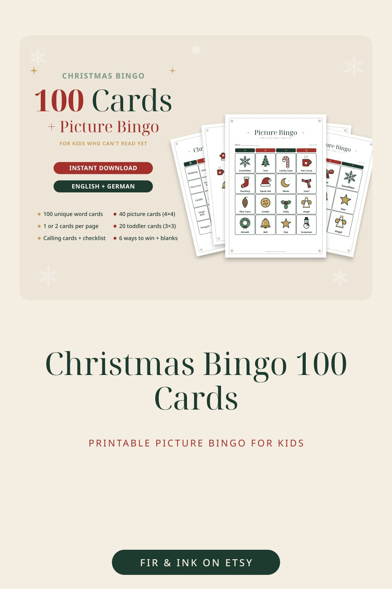

Christmas Bingo 100 Cards
Printable Picture Bingo for Kids

100 unique Christmas bingo cards PLUS a picture bingo for little ones who can't read yet – one download for the whole family, the classroom or the office party. No two cards are alike, so even big groups get a fair game.
★ WHAT'S INCLUDED (222 PAGES PER PAPER SIZE)
• Start here: cover, how to play + 6 ways to win (line, four corners, X, blackout, picture frame, Christmas tree)
• Word Bingo – 100 unique 5×5 cards with a FREE centre, 60 Christmas words
• The same 100 cards 2 per page (landscape) to save paper
• Word calling cards (cut-out) + caller checklist
• Picture Bingo – 40 unique 4×4 cards for ages 3–6: every square is a simple picture with the word underneath
• Toddler Picture Bingo – 20 extra-large 3×3 cards
• 28 picture calling cards + picture checklist
• Blank templates: 5×5, 4×4, 3×3 + blank calling cards – write or draw your own
★ 28 HAND-DRAWN PICTURES
Tree, star, bell, candle, gift, snowman, stocking, mitten, gingerbread man, candy cane, ornament, sleigh, reindeer, Santa hat, cookie, hot cocoa, snowflake, wreath, angel, house, moon, scarf, holly, pine cone, bow, lantern, penguin, teddy bear
★ BONUS: complete GERMAN version included (written for German-speaking families: Christkind, Plätzchen, Adventskranz, Nikolaus …)